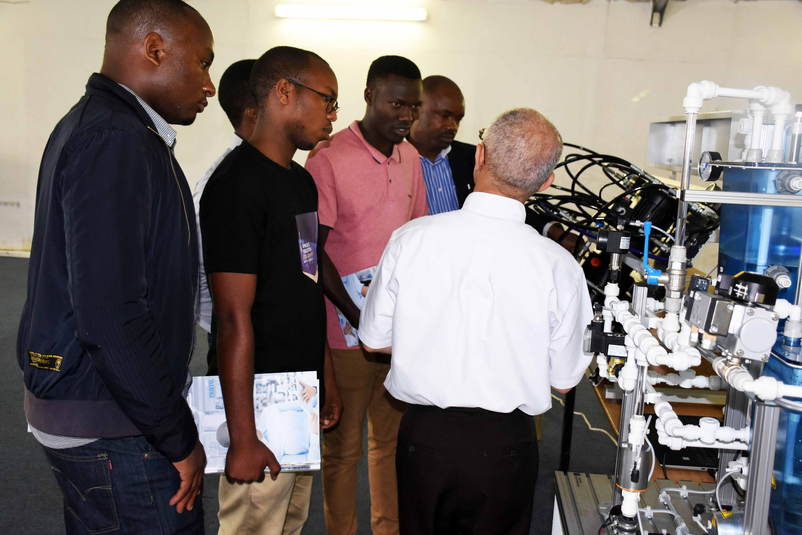

ur huye is the university of rwanda where every won students are assigned to continue to study to emprove thier carrier.ur huye is in the most good university of rwanda which give you high knowlegde and skills that can support you to well your choice of carrier.Huye university of rwanda was the first university to reach in rwanda first, that why we give more expience on what you chose to study.Students at the University of Rwanda College of Science and Technology were able to experience technologies and processes used in industrial production. The facility was made by Festo Didactic Company that reached out to the college to exhibit equipment for technical education that would allow students to acquire practical experience that they need to work independently in industry.

The College of Science and Technology at the University of Rwanda huye campus is the densest in terms of academic programmes with a good number of centres of excellence. The College is trying to capitalize on available asset to do research that are challenge driven with much involvement of students. For this to happen, there might be potential reengineering of current systems and design a roadmap that would fully move the College from theory to practice. In addition, the College is planning to make a series of CDE training in order to understand related challenges in the course of its integration in education system.
If you want to study in our university fill out the form follow:
username: